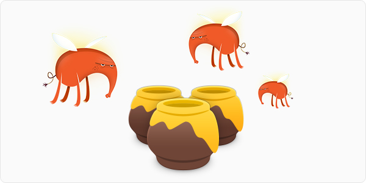

蜜罐指具有缺陷的，用于吸引网络的计算机病毒侵占以便用于病毒的研究和破解的计算机。
互联网就像一个黑暗丛林，当你拥有一个面向公网的服务器时，永远不知道会有多少双眼睛在盯着你。
基于这个信条，我相信我的几台 vps 经常受到各种 ssh 的暴力破解的骚扰，为了安全考虑我也早就把默认 ssh 端口号 22 改为了某个随机值（有些是运营商强行修改）。
前段时间突发奇想，是否可以监听下 22 端口，感受下在这个黑暗丛林中来自各方的打击？继而又想到，既然来感受打击，为何不把这些打击详细记录一下，假以时日，我是不是就可以得到一个「丛林常用爆破密码库」了？
部署
说干就干，选择了我其中一个坐落于米国的服务器来部署蜜罐程序。修改 ssh 默认端口号的步骤就不再介绍了，直奔主题。
为了方便，我通过 Docker 来部署，只需 1 行命令：
1 | docker run -itd --name ssh-honeypot -p 22:22 txt3rob/docker-ssh-honey |
这里用 Docker 启动了一个 ssh 蜜罐镜像，然后把蜜罐的 22 端口映射到本地 22 端口，验证一下 22 端口的开放情况：
1 | # lsof -i:22 |
后边就坐等蜜罐来收集登录信息吧。
程序默认把登录日志输出到 Docker 容器的控制台中，日志格式如下：
1 | [Thu Nov 7 17:59:00 2019] 187.189.55.192 root 123456 |
我们可以通过管道（|） + 重定向（>）的方式把结果导出出来：
1 | docker logs $(docker ps -f name=ssh-honeypot -q) | grep -v 'Error exchanging' | grep -v 'Session' | awk '{print $6, $7, $8}' > ./ssh_password.log |
上边命令只保留了 ip、username、password 三列，同时过滤掉了程序自己打印的日志（包含 Session或者 Error exchanging 的行）。
拿到数据后需要再进行一下简单的清洗：
去掉行首行尾的空格1
2sed -i 's/^[ \t]*//g' ssh_password.log
sed -i 's/[ \t]*$//g' ssh_password.log
去除空行
1 | sed -i '/^$/d' ssh_password.log |
去掉数据结尾的 ^M
1 | dos2unix -f ssh_password.log |
收网
运行三周后，我一共收到了 1340万+ 的用户名密码（看到结果后有些震惊），去重后（cat ssh_password.log | awk '{print $2$3}' | uniq -c | wc -l）也有 1290万，之后我对这些数据进行了统计。
统计常用用户名的 top5：
1 | # awk '$2!="" {sum[$2]+=1} END {for(k in sum) print k ":" sum[k]}' ssh_password.log | sort -n -r -k 2 -t ':' | head -n 5 |
统计常用密码的 top5：
1 | # awk '$3!="" {sum[$3]+=1} END {for(k in sum) print k ":" sum[k]}' ssh_password.log | sort -n -r -k 2 -t ':' | head -n 5 |
统计常用用户名密码组合的 top5：
1 | # awk '$2!="" {sum[$2"_"$3]+=1} END {for(k in sum) print k ":" sum[k]}' ssh_password.log | sort -n -r -k 2 -t ':' | head -n 5 |
数据很有意思，也确实是我们最常用的那些用户名密码。
关于安全
简单通过修改 ssh 端口号的方式也不是最为稳妥的方法，真正安全的做法应该是：
- 配置 ssh 密钥
- 禁用密码登录
- 配置 ssh ip 登录白名单
最后
我把我的蜜罐中采到的蜂蜜分享出来，下载链接：http://developer.jpanj.com/ssh_password.log
大家一起来享用这份喜悦吧。